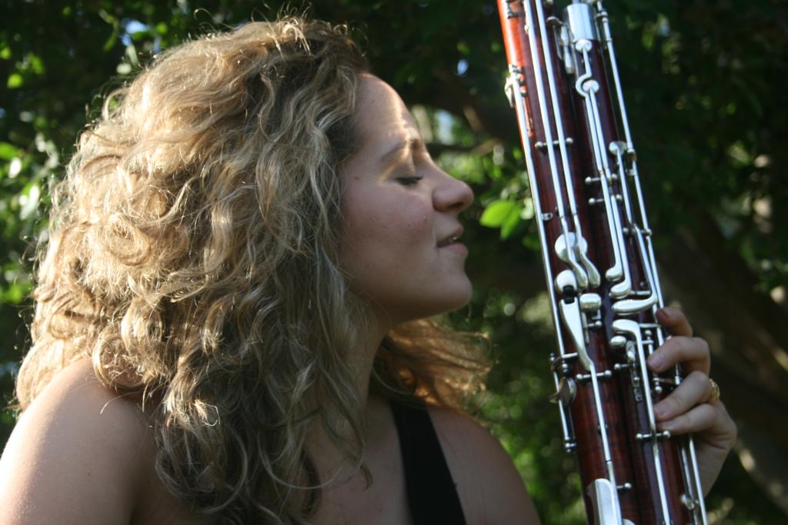

Irene Pérez Cantillón
Secretaria de la ADCSFagot
Formación académica
Nacida en Sevilla en 2001, comienza sus estudios musicales con José Arsenio Rueda, terminando el Grado Profesional con Premio Honorífico. Continúa los estudios superiores en la cátedra de Luis Castillo y Miguel García, en el C.S.M. «Manuel Castillo». Amplía su formación en Alemania, en la Hochschule für Musik Freiburg, junto al maestro Diego Chenna y también con Angela Bergmann, contrafagot.
Además, ha sido alumna de la Academia de Estudios Orquestales de la Fundación Barenboim-Said, y ha recibido asiduamente clases de Ramiro García. Ha sido miembro de la Orquesta Joven de Andalucía y de la Neue Philharmonie München (Alemania).
Carrera como intérprete
A nivel profesional, ha trabajado con la Real Orquesta Sinfónica de Sevilla, la Orquesta Ciudad de Granada, la Orquesta de Extremadura y la Orquesta ADDA Sinfónica de Alicante. En el ámbito de la música de cámara, posee diversos premios, habiendo tenido además la oportunidad de formar parte de proyectos como el del ciclo de música contemporánea en la Gare du Nord de Basilea, Suiza, o Anam Camerata.
Trayectoria docente
Actualmente es profesora de fagot en el Conservatorio Profesional de Música «Tomás Bote Lavado» de Almendralejo.